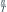
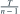
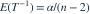
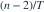

Pareto 两参数  均未知，
均未知， 。令
。令  。已知
。已知  （第二参数为速率）。
（第二参数为速率）。 的无偏估计为？
的无偏估计为？
均未知，。令 。已知 （第二参数为速率）。 的无偏估计为？- A
- B
- C

- D

我已思考，展开答案与解析
正确答案：A
- 根据题给 Gamma 分布，

。 - 所以

的期望正好为。未知阈值使对数间距和的形状从 n 变为 n−1。
易错提醒不能照搬阈值已知时的修正系数 n−1。
JYSG · 432精选 · 册内复旦大学432·2026年·九；偏差修正延伸；PDF第43页（印刷页41）
原题知识点延伸